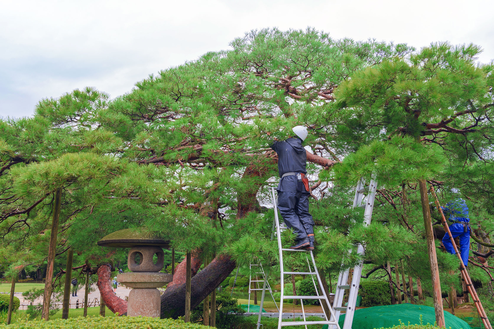
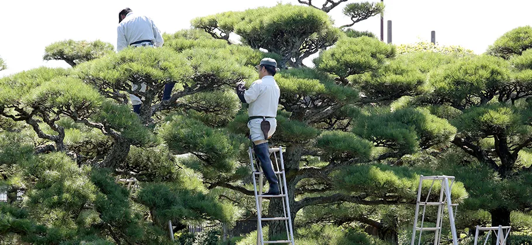
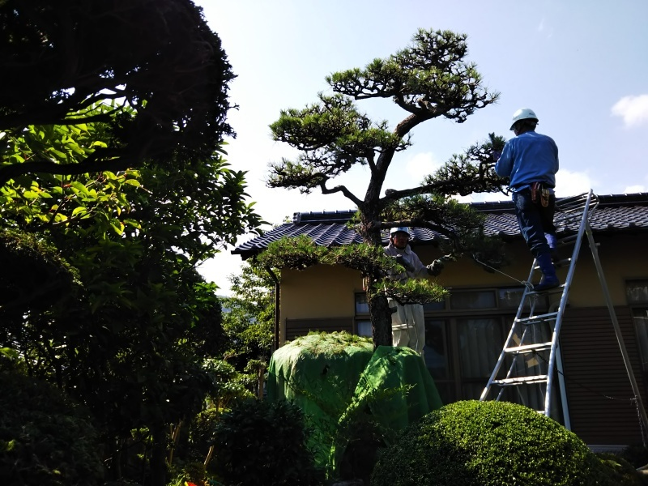
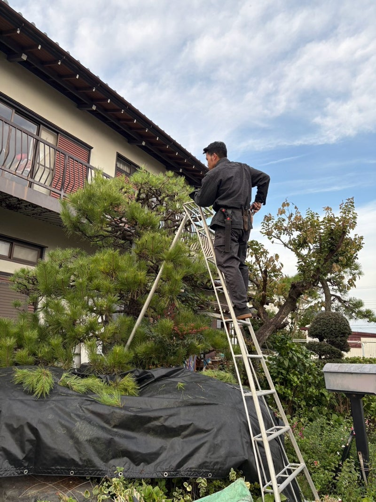

剪定切るのは、
終わらせるためでは
ありません。
剪定は、竜樹伐採の仕事の中で、ただひとつ「この木に、これからも生き続けてもらうこと」を前提にした仕事です。伸びすぎた枝を落とすだけではなく、来年の芽の出方、庭への日当たり、風の通り道まで見て、残す枝と落とす枝を決めていきます。
剪定は、木の都合に合わせて
切る仕事です。
庭木の剪定というと、伸びた分を切りそろえる作業と思われがちです。けれども実際に切る場所を決めるのは、見た目の都合だけではありません。その枝を落とすと翌年どこから芽が出るか、残した枝に日が当たるようになるか、台風のときに風を受けすぎないか。木の側の都合を先に考えて、それから人の都合に合わせていくのが、竜樹伐採の剪定です。
切りすぎは、木を弱らせます。一度に枝を落としすぎると、木は失った葉を補おうとして勢いの強い枝を吹き出し、かえって形が崩れます。反対に、何年も放っておくと内側の枝が枯れ込み、病害虫の住みかになります。ちょうどよい間引きを、木の種類と状態に合わせて行うことが大切です。
先代から受け継いだ庭木や、家を建てたときに植えた記念樹など、切ってしまうには惜しい木ほど、剪定の出番です。残せるかどうか迷っている段階でも構いませんので、まずは木の状態を見せてください。
-
光
内側まで日を入れる
枝が込み合うと、内側の葉に日が当たらず枯れていきます。枝を透かして光を通すと、木全体に葉が付き、形も保ちやすくなります。
-
風
風を通し、蒸れを防ぐ
風通しの悪い樹は、病害虫が出やすくなります。風の通り道を作ることは、見た目以上に木の健康を保つうえで大切です。
-
時
来年の芽まで見て切る
切った場所の近くから、翌年の芽が出ます。今年の形を整えるだけでなく、来年どう伸びるかを考えて切る位置を選びます。

庭木一本から、庭全体の手入れまで。
「どこまで頼めるのか分からない」というお声をよくいただきます。目安として、よくあるご依頼をまとめました。この中に無い内容でも、まずはご相談ください。
透かし剪定 SUKASHI
込み合った枝を間引き、樹の内側まで光と風が届くようにします。大きくなりすぎた庭木を、形を崩さずに一回り小さく見せたいときにも有効です。
松の手入れ MATSU
春のミドリ摘みと、秋から冬にかけての古葉取り・透かしを行います。松は手を入れる時期が決まっている木ですので、年一回の定期的な手入れをおすすめしています。
花木・実のなる木 HANAKI
梅、柿、ツツジ、サツキなどは、切る時期を間違えると翌年の花や実が付かなくなります。花芽の付く時期に合わせて、剪定の時期をご案内します。
樹形の立て直し TATENAOSHI
何年も手を入れていない木は、一度の剪定では元の形に戻りません。木に無理をさせないよう、数年かけて少しずつ整える計画を立てて進めます。
生垣・低木の刈り込み IKEGAKI
目隠しとしての役目を保ちながら、高さと厚みを整えます。道路側にはみ出して通行の妨げになっている場合も、合わせて整えます。
大きくなりすぎた木の縮小 SHUKUSHO
屋根や電線に届きそうな木は、切り戻して高さを抑えます。状態によっては、剪定よりも伐採した方がよい場合もあります。その判断も含めて、正直にお伝えします。


切る時期は、木の種類で決まります。
剪定はいつでもできる作業ではありません。木ごとに適した時期があり、それを外すと花が付かなかったり、木が弱ったりします。季節を選ぶと、その時期にできることをご覧いただけます。
まず写真から概算をご案内します。
同じ「剪定」でも、脚立で届く低木と、木に登って作業する高木では、かかる手間が大きく異なります。剪定は伐採とあわせてご相談ください。竜樹伐採では、まず写真から作業内容と概算の金額をご案内します。写真だけでは判断できない場合は、概算をお伝えしたうえで現地を確認し、見積内容を詰めます。
- 木の高さと本数脚立で届くか、木に登るかで変わります
- 枝の量何年手を入れていないかで変わります
- 剪定の内容透かし、切り戻し、立て直しなど
- 処分する枝葉の量持ち帰って処分する費用を含みます
- 庭の条件脚立を立てられるか、搬出の距離など
見積りは無料です
まず木の全体と周囲の写真を確認し、作業内容と概算の金額をお伝えします。写真だけでは判断できない条件がある場合に、現地確認をご相談します。ご納得いただいてから作業日を決めますので、その場でお決めいただく必要はありません。
ご相談は、まず庭の写真をLINEでお送りください。写真から、大まかな費用の見通しと剪定に適した時期をご案内します。
ご相談から作業完了まで。
-
1
ご相談
お電話、またはLINEで、木の種類とお困りの内容をお聞かせください。庭の写真を送っていただければ、その場で大まかな見通しをお伝えできます。
-
2
写真で概算見積
写真から木の状態とご希望を伺い、作業内容と概算の金額をご案内します。写真だけでは判断できない場合は、概算をお伝えしたうえで現地を確認し、見積内容を詰めます。
-
3
作業日の調整
木の種類に合った時期をご提案し、ご都合のよい日を決めます。時期を待った方がよい木の場合は、その理由をご説明して時期を改めます。
-
4
剪定作業
近隣のお宅へご挨拶のうえ、下の植木や地面にシートを敷いて養生してから作業します。切り落とした枝と葉は、すべて持ち帰ります。
-
5
確認とお支払い
仕上がりを一緒にご確認いただきます。気になる場所があれば、その場で手直しします。問題がなければ完了となり、お支払いをお願いいたします。
ご相談の前に。
問剪定と伐採は、どう違うのですか。＋
伐採は木を根元から切って無くす作業で、剪定は木を残したまま枝を整える作業です。どちらにするか迷われている場合は、木の状態を見て、残せるかどうかから一緒に考えます。無理に残す方が危険な木もありますので、その場合は伐採をおすすめします。
問切った枝の処分は含まれますか。＋
はい、含まれます。切り落とした枝や葉はすべて持ち帰って処分し、作業後は庭を掃いてお返しします。見積りの金額に追加で処分費がかかることはありません。
問剪定は、どのくらいの頻度で必要ですか。＋
一般的な庭木で、年に一回が目安です。松は形を保つために年一回の手入れが大切です。伸びの早い木は、年二回に分けて少しずつ切る方が、一度に大きく切るよりも木の負担が小さくなります。
問お隣の敷地にはみ出した枝も切れますか。＋
切れます。ただし、枝の位置によってはお隣の敷地側から作業する必要があり、その場合はお隣へのご挨拶や許可が要ります。現地確認の際に、段取りをご説明しますのでご安心ください。
問留守の日に作業してもらえますか。＋
可能です。事前に作業する範囲をすり合わせ、当日は作業前と作業後の写真をお送りしてご報告します。お支払いの方法も含め、事前に取り決めをいたします。
問見積りだけでも大丈夫ですか。＋
もちろんです。見積りは無料で、金額をご覧になってからお断りいただいても構いません。時期を待った方がよい場合は、そのことも合わせてお伝えします。
問LINEで相談できますか。＋
はい、ご相談いただけます。友だち追加のうえ、庭木の写真とお困りの内容をお送りください。写真だけでも、大まかな見通しと剪定に適した時期をお伝えできます。文章でのご相談も、そのままLINEでお送りいただけます。
竜樹伐採の仕事は、三つに分かれます。
木一本にも、置かれている状況によって必要な仕事が異なります。竜樹伐採では、仕事の内容を「空」「生」「終」の三つに分けて、それぞれ専用のページでご案内しています。
-
空
第一章「空」― 特殊伐採
家や電線に近く、倒す場所のない木を対象にした仕事です。木に登り、枝や幹を少しずつ切り分けて、ロープで静かに下ろします。
-
生
第二章「生」― 剪定（このページ）
残したい木のための仕事です。光と風を通し、来年の芽の出方まで考えて枝を選び、木がこれからも庭で生き続けられる形に整えます。
-
終
第三章「終」― 伐採
枯れて危険になった木、空き家の庭木、竹林など、役目を終えた木を対象にした仕事です。安全に切り倒し、切り株の処理と片付けまで行います。
その木は、残せるかもしれません。
「大きくなりすぎたから切るしかない」と思っていた木が、剪定で収まることは少なくありません。反対に、残すには危険な状態の木もあります。どちらの場合も、木を見れば分かります。まずは写真一枚からでも、お気軽にご相談ください。
LINEは友だち追加のうえ、庭木の写真とお困りの内容をお送りください。写真だけでも、大まかな見通しをお伝えできます。